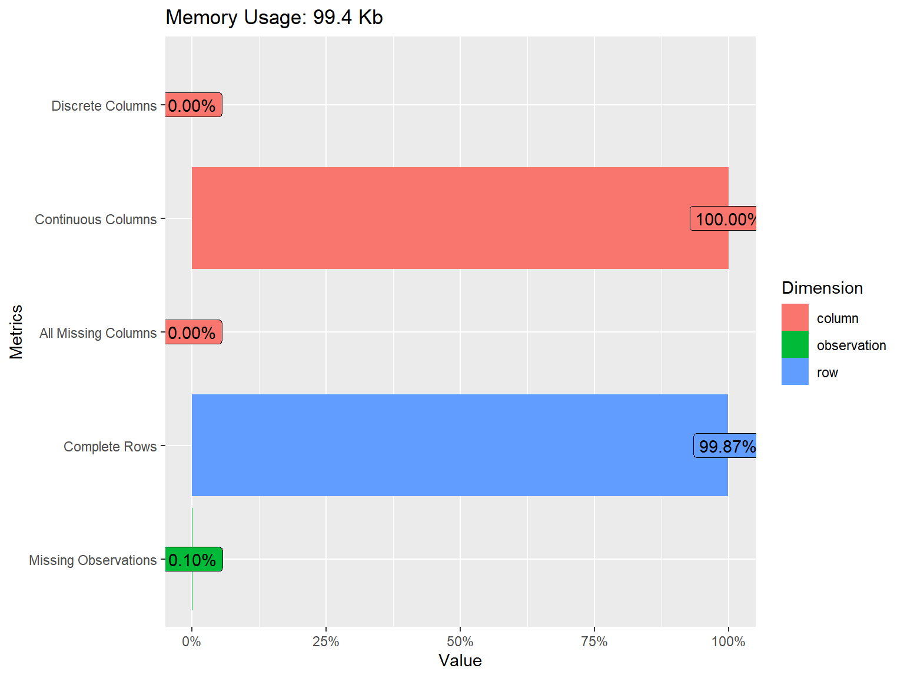
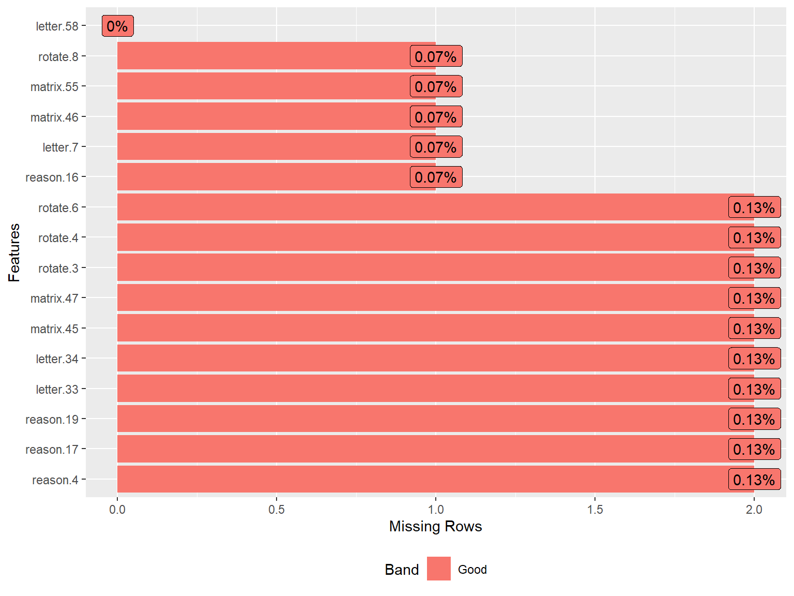
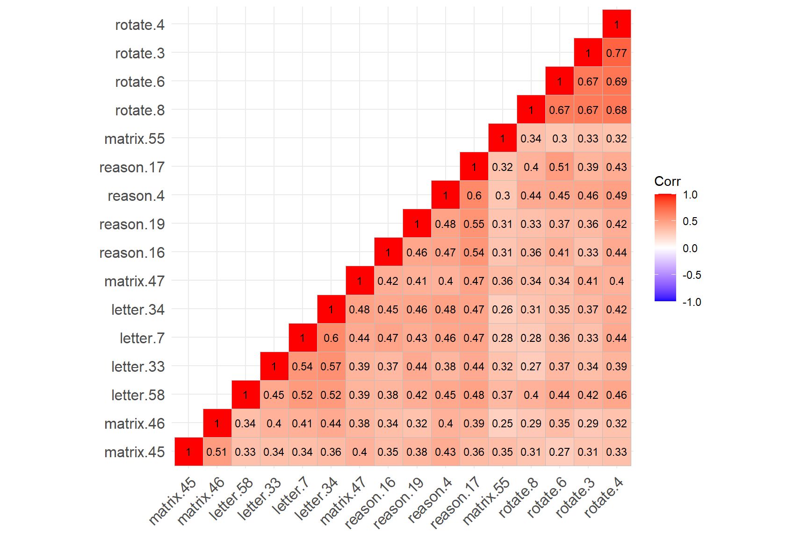

The Synthetic Aperture Personality Assessment (SAPA) is a web based personality assessment project (https://www.sapa-project.org/). The purpose of SAPA is to find patterns among the vast number of ways that people differ from one another in terms of their thoughts, feelings, interests, abilities, desires, values, and preferences (Condon & Revelle, 2014; Revelle et al., 2010). In this example, we will use a subset of SAPA (16 items) sampled from the full instrument (80 items) to develop online measures of ability. These 16 items measure four subskills (i.e., verbal reasoning, letter series, matrix reasoning, and spatial rotations) as part of the general intelligence “g.” The SAPA dataset is a data frame with 1525 individuals who responded to 16 multiple-choice items in SAPA. The original dataset is included in the psych package (Revelle, 2021). The dataset can be downloaded from here. In addition, the R codes for the item response theory (IRT) analyses presented on this page are available here.
In our examples (both Example 1 and Example 2), we will conduct IRT and other relevant analyses using the following packages:
| Package | URL |
|---|---|
| Exploratory Data Analysis | |
| DataExplorer | http://CRAN.R-project.org/package=DataExplorer |
| ggcorrplot | http://CRAN.R-project.org/package=ggcorrplot |
| Psychometric Analysis | |
| psych | http://CRAN.R-project.org/package=psych |
| lavaan | http://CRAN.R-project.org/package=lavaan |
| mirt | http://CRAN.R-project.org/package=mirt |
We have already installed and used some of the above packages in the CTT section. Therefore, we will only install the new R packages this time:
# Install all the packages together
install.packages(c("lavaan", "mirt"))We will use lavaan (Rosseel et al., 2021) to conduct confirmatory factor analysis and mirt (Chalmers, 2020) to estimate dichotomous and polytomous IRT models.
🔔 INFORMATION: There are many other packages for estimating IRT models in R, such as ltm (Rizopoulos, 2006), eRm (Mair et al., 2020), TAM (Robitzsch et al., 2021), and irtoys (Partchev & Maris, 2017). I prefer the mirt package because it includes functions to estimate various IRT models (e.g., unidimensional, multidimensional, and explanatory IRT models), additional functions to check model assumptions (e.g., local independence), and various tools to visualize IRT-related objects (e.g., item characteristic curve, item information function, and test information function). You can check out Choi & Asilkalkan (2019) for a detailed review of IRT packages available in R.
We will begin our analysis by conducting exploratory data analysis (EDA). As you may remember from the CTT section, we use EDA to check the quality of our data and identify potential problems (i.e., missing values) in the data. In this section, we will import sapa.csv into R, review the variables in the dataset, and then perform exploratory factor analysis (EFA) to evaluate the dimensionality of the SAPA items.
First, we need to set up our working directory. I created a new folder called “IRT Analysis” on my desktop and put our data (sapa_data.csv) into this folder. Now, we will change our working directory to this new folder:
setwd("C:/Users/Okan/Desktop/IRT Analysis")Next, we will import the data into R using the read.csv() function and save it as “sapa.”
sapa <- read.csv("sapa_data.csv", header = TRUE)Using the head() function, we can now view the first 6 rows of the sapa dataset:
head(sapa) reason.4 reason.16 reason.17 reason.19 letter.7 letter.33 letter.34 letter.58 matrix.45 matrix.46 matrix.47
1 0 0 0 0 0 1 0 0 0 0 0
2 0 0 1 0 1 0 1 0 0 0 0
3 0 1 1 0 1 0 0 0 1 1 0
4 1 0 0 0 0 0 1 0 0 0 0
5 0 1 1 0 0 1 0 0 1 1 0
6 1 1 1 1 1 1 1 1 1 1 1
matrix.55 rotate.3 rotate.4 rotate.6 rotate.8
1 1 0 0 0 0
2 0 0 0 1 0
3 0 0 0 0 0
4 0 0 0 0 0
5 0 0 0 0 0
6 0 1 1 1 0We can also see the names and types of the variables in our dataset using the str() function:
str(sapa)'data.frame': 1525 obs. of 16 variables:
$ reason.4 : int 0 0 0 1 0 1 1 0 1 1 ...
$ reason.16: int 0 0 1 0 1 1 1 1 1 1 ...
$ reason.17: int 0 1 1 0 1 1 1 0 0 1 ...
$ reason.19: int 0 0 0 0 0 1 1 0 1 1 ...
$ letter.7 : int 0 1 1 0 0 1 1 0 0 0 ...
$ letter.33: int 1 0 0 0 1 1 1 0 1 0 ...
$ letter.34: int 0 1 0 1 0 1 1 0 1 1 ...
$ letter.58: int 0 0 0 0 0 1 1 0 1 0 ...
$ matrix.45: int 0 0 1 0 1 1 1 0 1 1 ...
$ matrix.46: int 0 0 1 0 1 1 1 1 0 1 ...
$ matrix.47: int 0 0 0 0 0 1 1 1 0 0 ...
$ matrix.55: int 1 0 0 0 0 0 0 0 0 0 ...
$ rotate.3 : int 0 0 0 0 0 1 1 0 0 0 ...
$ rotate.4 : int 0 0 0 0 0 1 1 1 0 0 ...
$ rotate.6 : int 0 1 0 0 0 1 1 0 0 0 ...
$ rotate.8 : int 0 0 0 0 0 0 1 0 0 0 ...The dataset consists of 1525 rows (i.e., participants) and 16 variables (i.e., SAPA items). We can get more information on the dataset using the introduce() and plot_intro() functions from the DataExplorer package (Cui, 2020):
DataExplorer::introduce(sapa)
DataExplorer::plot_intro(sapa)| rows | 1,525 |
| columns | 16 |
| discrete_columns | 0 |
| continuous_columns | 16 |
| all_missing_columns | 0 |
| total_missing_values | 25 |
| complete_rows | 1,523 |
| total_observations | 24,400 |
| memory_usage | 101,832 |

The plot above shows that all of the variables in the dataset are continuous. We also see that some of the variables have missing values but the proportion of missing data is very small (only 0.10%). To have a closer look at missing values, we can visualize the proportion of missingness for each variable using plot_missing() from DataExplorer.
DataExplorer::plot_missing(sapa)
To obtain a detailed summary of the sapa dataset, we will use the describe() function from the psych package (Revelle, 2021).
psych::describe(x = sapa) vars n mean sd median trimmed mad min max range skew kurtosis se
reason.4 1 1523 0.64 0.48 1 0.68 0 0 1 1 -0.58 -1.66 0.01
reason.16 2 1524 0.70 0.46 1 0.75 0 0 1 1 -0.86 -1.26 0.01
reason.17 3 1523 0.70 0.46 1 0.75 0 0 1 1 -0.86 -1.26 0.01
reason.19 4 1523 0.62 0.49 1 0.64 0 0 1 1 -0.47 -1.78 0.01
letter.7 5 1524 0.60 0.49 1 0.62 0 0 1 1 -0.41 -1.84 0.01
letter.33 6 1523 0.57 0.50 1 0.59 0 0 1 1 -0.29 -1.92 0.01
letter.34 7 1523 0.61 0.49 1 0.64 0 0 1 1 -0.46 -1.79 0.01
letter.58 8 1525 0.44 0.50 0 0.43 0 0 1 1 0.23 -1.95 0.01
matrix.45 9 1523 0.53 0.50 1 0.53 0 0 1 1 -0.10 -1.99 0.01
matrix.46 10 1524 0.55 0.50 1 0.56 0 0 1 1 -0.20 -1.96 0.01
matrix.47 11 1523 0.61 0.49 1 0.64 0 0 1 1 -0.47 -1.78 0.01
matrix.55 12 1524 0.37 0.48 0 0.34 0 0 1 1 0.52 -1.73 0.01
rotate.3 13 1523 0.19 0.40 0 0.12 0 0 1 1 1.55 0.40 0.01
rotate.4 14 1523 0.21 0.41 0 0.14 0 0 1 1 1.40 -0.03 0.01
rotate.6 15 1523 0.30 0.46 0 0.25 0 0 1 1 0.88 -1.24 0.01
rotate.8 16 1524 0.19 0.39 0 0.11 0 0 1 1 1.62 0.63 0.01From the output above, we can see the number of individuals who responded to each SAPA item, the mean response value (i.e., proportion-correct or item difficulty), and other descriptive statistics. We see that most SAPA items have moderate difficulty values although the rotation items (i.e., rotate.3, rotate.4, rotate.6, and rotate.8) are more difficult than the remaining items in the dataset.
In CTT section, we checked the correlations among the nfc items to gauge how strongly the items were associated with each other. We expected the items to be associated with each other because they were designed to measure the same latent trait (i.e., need for cognition). For the sapa dataset, we will have to make a similar assumption: all SAPA items measure the same latent trait (general intelligence or g). However, given that the items come from different content areas (i.e., verbal reasoning, letter series, matrix reasoning, and spatial rotations), we must ensure that these items are sufficiently correlated with each other and measure a single latent trait.
To compute the correlations among the SAPA items, we will use the tetrachoric() function from psych. Since the SAPA items are dichotomously scored (i.e., 0: incorrect and 1: correct), we cannot use Pearson correlations (which could be obtained using the cor() function in R). We will compute the correlations and then extract rho- (i.e., the correlation matrix of the items).
# Save the correlation matrix
cormat <- psych::tetrachoric(x = sapa)$rho
# Print the correlation matrix
print(cormat)| reason.4 | reason.16 | reason.17 | reason.19 | letter.7 | letter.33 | letter.34 | letter.58 | matrix.45 | matrix.46 | matrix.47 | matrix.55 | rotate.3 | rotate.4 | rotate.6 | rotate.8 | |
|---|---|---|---|---|---|---|---|---|---|---|---|---|---|---|---|---|
| reason.4 | 1.0000 | 0.4742 | 0.6000 | 0.4839 | 0.4623 | 0.3803 | 0.4792 | 0.4549 | 0.4313 | 0.3994 | 0.4010 | 0.2988 | 0.4562 | 0.4909 | 0.4468 | 0.4360 |
| reason.16 | 0.4742 | 1.0000 | 0.5358 | 0.4578 | 0.4708 | 0.3737 | 0.4494 | 0.3805 | 0.3513 | 0.3375 | 0.4210 | 0.3135 | 0.3266 | 0.4425 | 0.4079 | 0.3642 |
| reason.17 | 0.6000 | 0.5358 | 1.0000 | 0.5496 | 0.4729 | 0.4405 | 0.4726 | 0.4797 | 0.3578 | 0.3924 | 0.4656 | 0.3156 | 0.3856 | 0.4274 | 0.5061 | 0.4007 |
| reason.19 | 0.4839 | 0.4578 | 0.5496 | 1.0000 | 0.4341 | 0.4351 | 0.4648 | 0.4231 | 0.3830 | 0.3227 | 0.4075 | 0.3058 | 0.3636 | 0.4192 | 0.3691 | 0.3329 |
| letter.7 | 0.4623 | 0.4708 | 0.4729 | 0.4341 | 1.0000 | 0.5380 | 0.6026 | 0.5228 | 0.3416 | 0.4119 | 0.4423 | 0.2794 | 0.3276 | 0.4432 | 0.3641 | 0.2751 |
| letter.33 | 0.3803 | 0.3737 | 0.4405 | 0.4351 | 0.5380 | 1.0000 | 0.5744 | 0.4483 | 0.3351 | 0.3966 | 0.3921 | 0.3178 | 0.3400 | 0.3942 | 0.3694 | 0.2679 |
| letter.34 | 0.4792 | 0.4494 | 0.4726 | 0.4648 | 0.6026 | 0.5744 | 1.0000 | 0.5154 | 0.3647 | 0.4362 | 0.4807 | 0.2563 | 0.3736 | 0.4158 | 0.3476 | 0.3079 |
| letter.58 | 0.4549 | 0.3805 | 0.4797 | 0.4231 | 0.5228 | 0.4483 | 0.5154 | 1.0000 | 0.3304 | 0.3415 | 0.3853 | 0.3708 | 0.4159 | 0.4574 | 0.4387 | 0.3975 |
| matrix.45 | 0.4313 | 0.3513 | 0.3578 | 0.3830 | 0.3416 | 0.3351 | 0.3647 | 0.3304 | 1.0000 | 0.5106 | 0.4026 | 0.3482 | 0.3071 | 0.3280 | 0.2657 | 0.3089 |
| matrix.46 | 0.3994 | 0.3375 | 0.3924 | 0.3227 | 0.4119 | 0.3966 | 0.4362 | 0.3415 | 0.5106 | 1.0000 | 0.3832 | 0.2516 | 0.2868 | 0.3230 | 0.3495 | 0.2899 |
| matrix.47 | 0.4010 | 0.4210 | 0.4656 | 0.4075 | 0.4423 | 0.3921 | 0.4807 | 0.3853 | 0.4026 | 0.3832 | 1.0000 | 0.3624 | 0.4074 | 0.4017 | 0.3413 | 0.3420 |
| matrix.55 | 0.2988 | 0.3135 | 0.3156 | 0.3058 | 0.2794 | 0.3178 | 0.2563 | 0.3708 | 0.3482 | 0.2516 | 0.3624 | 1.0000 | 0.3274 | 0.3226 | 0.2998 | 0.3413 |
| rotate.3 | 0.4562 | 0.3266 | 0.3856 | 0.3636 | 0.3276 | 0.3400 | 0.3736 | 0.4159 | 0.3071 | 0.2868 | 0.4074 | 0.3274 | 1.0000 | 0.7706 | 0.6655 | 0.6748 |
| rotate.4 | 0.4909 | 0.4425 | 0.4274 | 0.4192 | 0.4432 | 0.3942 | 0.4158 | 0.4574 | 0.3280 | 0.3230 | 0.4017 | 0.3226 | 0.7706 | 1.0000 | 0.6908 | 0.6822 |
| rotate.6 | 0.4468 | 0.4079 | 0.5061 | 0.3691 | 0.3641 | 0.3694 | 0.3476 | 0.4387 | 0.2657 | 0.3495 | 0.3413 | 0.2998 | 0.6655 | 0.6908 | 1.0000 | 0.6650 |
| rotate.8 | 0.4360 | 0.3642 | 0.4007 | 0.3329 | 0.2751 | 0.2679 | 0.3079 | 0.3975 | 0.3089 | 0.2899 | 0.3420 | 0.3413 | 0.6748 | 0.6822 | 0.6650 | 1.0000 |
The correlation matrix does not show any negative or low correlations (which is a very good sign! 👍). To check the associations among the items more carefully, we will also create a correlation matrix plot using the ggcorrplot() function from the ggcorrplot package (Kassambara, 2019). We will include the hc.order = TRUE argument to perform hierarchical clustering. This will look for groups (i.e., clusters) of items that are strongly associated with each other. If all SAPA items measure the same latent trait, we should see a single cluster of items.
ggcorrplot::ggcorrplot(corr = cormat, # correlation matrix
type = "lower", # print only the lower part of the correlation matrix
hc.order = TRUE, # hierarchical clustering
show.diag = TRUE, # show the diagonal values of 1
lab = TRUE, # add correlation values as labels
lab_size = 3) # Size of the labels
The figure above shows that the four rotation items have created a cluster (see the cluster on the top-right corner), while the remaining SAPA items have created another cluster (see the cluster on the bottom-left corner). The rotation items are strongly correlated with each other (not surprising given that they all focus on the rotation skills); however, the same items have relatively lower correlations with the other items in the dataset. Also, matrix.55 seems to have relatively low correlations with the items from both clusters.
Findings of hierarchical clustering suggest that the SAPA items may not be measuring a single latent trait. However, hierarchical clustering is not a test of dimensionality. To ensure that there is a single factor (i.e., latent trait) underlying the SAPA items, we need to perform factor analysis and evaluate the factor structure of the SAPA items (i.e., dimensionality).
Factor analysis is a statistical modeling technique that aims to explain the common variability among a set of observed variables a reduced set of variables known as factors (or dimensions). At the core of factor analysis is the desire to reduce the dimensionality of the data from \(p\) indicators to \(q\) factors, such that \(q < p\). During instrument development or when there are no prior beliefs about the dimensionality or structure of an existing instrument, exploratory factor analysis (EFA) should be considered to investigate the factorial structure of the instrument. To perform EFA, we need to specify the number of factors to extract, how to rotate factors (if the number of factors > 1), which type of estimation method should be used depending on the nature of the data (e.g., categorical vs. continuous variables).
The psych package includes several functions to perform factor analytic analysis with different estimation methods. We will use the fa() function in the psych package to perform EFA. To use the function, we need to specify the following items:
cor = "Pearson" (Pearson correlation); for dichotomous variables, use cor = "tet" (tetrachoric correlation); for polytomous variables (e.g., Likert scales), use cor = "poly" (polychoric correlation).First, we will try a one-factor model, evaluate model fit, and determine whether a one-factor (i.e., unidimensional) structure is acceptable for the SAPA items:
# Try one-factor EFA model --> nfactors=1
efa.model1 <- psych::fa(r = sapa, nfactors = 1, fm = "pa", cor = "tet")print(efa.model1, sort = TRUE) # Show the factor loadings sorted by absolute valueFactor Analysis using method = pa
Call: psych::fa(r = sapa, nfactors = 1, fm = "pa", cor = "tet")
Standardized loadings (pattern matrix) based upon correlation matrix
V PA1 h2 u2 com
rotate.4 14 0.74 0.55 0.45 1
reason.17 3 0.71 0.51 0.49 1
reason.4 1 0.70 0.49 0.51 1
rotate.6 15 0.69 0.47 0.53 1
letter.34 7 0.68 0.46 0.54 1
rotate.3 13 0.68 0.46 0.54 1
letter.7 5 0.67 0.44 0.56 1
letter.58 8 0.66 0.44 0.56 1
reason.19 4 0.64 0.41 0.59 1
rotate.8 16 0.64 0.41 0.59 1
reason.16 2 0.63 0.40 0.60 1
matrix.47 11 0.62 0.39 0.61 1
letter.33 6 0.62 0.39 0.61 1
matrix.46 10 0.56 0.31 0.69 1
matrix.45 9 0.54 0.30 0.70 1
matrix.55 12 0.48 0.23 0.77 1
PA1
SS loadings 6.65
Proportion Var 0.42
Mean item complexity = 1
Test of the hypothesis that 1 factor is sufficient.
The degrees of freedom for the null model are 120 and the objective function was 8.04 with Chi Square of 12198
The degrees of freedom for the model are 104 and the objective function was 1.85
The root mean square of the residuals (RMSR) is 0.08
The df corrected root mean square of the residuals is 0.09
The harmonic number of observations is 1523 with the empirical chi square 2304 with prob < 0
The total number of observations was 1525 with Likelihood Chi Square = 2806 with prob < 0
Tucker Lewis Index of factoring reliability = 0.742
RMSEA index = 0.131 and the 90 % confidence intervals are 0.126 0.135
BIC = 2044
Fit based upon off diagonal values = 0.96
Measures of factor score adequacy
PA1
Correlation of (regression) scores with factors 0.96
Multiple R square of scores with factors 0.92
Minimum correlation of possible factor scores 0.84The output shows the factor loadings for each item (see the PA1 column) and the proportion of explained variance (42%; see Proportion Var). The factor loadings seem fine (i.e., > 0.3 – which is the typical cut-off value to determine significant loadings). We can determine model fit based on model fit indices of root mean square of residuals (RMSR), root mean square error of approximation (RMSEA), and Tucker-Lewis Index. We can use Hu & Bentler (1999)’s guidelines for these model fit indices: Tucker-Lewis index (TLI) > .95, RMSEA < .06, and RMSR near zero indicate good model fit. The fit measures in the output show that the one-factor model does not necessarily fit the sapa dataset. Therefore, we will try a two-factor model in the next run:
# Try two-factor EFA model --> nfactors=2
efa.model2 <- psych::fa(sapa, nfactors = 2, rotate = "oblimin", fm = "pa", cor = "tet")print(efa.model2, sort = TRUE) # Show the factor loadings sorted by absolute valueFactor Analysis using method = pa
Call: psych::fa(r = sapa, nfactors = 2, rotate = "oblimin", fm = "pa",
cor = "tet")
Standardized loadings (pattern matrix) based upon correlation matrix
item PA1 PA2 h2 u2 com
letter.34 7 0.80 -0.09 0.56 0.44 1.0
letter.7 5 0.78 -0.09 0.53 0.47 1.0
letter.33 6 0.70 -0.05 0.44 0.56 1.0
reason.17 3 0.65 0.11 0.52 0.48 1.1
reason.19 4 0.62 0.05 0.43 0.57 1.0
matrix.46 10 0.59 -0.01 0.34 0.66 1.0
matrix.47 11 0.59 0.07 0.40 0.60 1.0
reason.16 2 0.58 0.09 0.41 0.59 1.0
reason.4 1 0.56 0.19 0.49 0.51 1.2
letter.58 8 0.56 0.15 0.44 0.56 1.1
matrix.45 9 0.56 0.02 0.32 0.68 1.0
matrix.55 12 0.35 0.17 0.23 0.77 1.5
rotate.3 13 -0.03 0.87 0.72 0.28 1.0
rotate.8 16 -0.05 0.85 0.66 0.34 1.0
rotate.4 14 0.09 0.81 0.75 0.25 1.0
rotate.6 15 0.07 0.75 0.64 0.36 1.0
PA1 PA2
SS loadings 4.87 3.03
Proportion Var 0.30 0.19
Cumulative Var 0.30 0.49
Proportion Explained 0.62 0.38
Cumulative Proportion 0.62 1.00
With factor correlations of
PA1 PA2
PA1 1.00 0.63
PA2 0.63 1.00
Mean item complexity = 1.1
Test of the hypothesis that 2 factors are sufficient.
The degrees of freedom for the null model are 120 and the objective function was 8.04 with Chi Square of 12198
The degrees of freedom for the model are 89 and the objective function was 0.64
The root mean square of the residuals (RMSR) is 0.04
The df corrected root mean square of the residuals is 0.05
The harmonic number of observations is 1523 with the empirical chi square 551.4 with prob < 7.8e-68
The total number of observations was 1525 with Likelihood Chi Square = 976.6 with prob < 2.1e-149
Tucker Lewis Index of factoring reliability = 0.901
RMSEA index = 0.081 and the 90 % confidence intervals are 0.076 0.086
BIC = 324.3
Fit based upon off diagonal values = 0.99
Measures of factor score adequacy
PA1 PA2
Correlation of (regression) scores with factors 0.95 0.95
Multiple R square of scores with factors 0.90 0.91
Minimum correlation of possible factor scores 0.81 0.81Based on the factor loadings listed under the PA1 and PA2 columns, we see that the first 12 items are highly loaded on the first factor whereas the last four items (i.e., rotation items) are loaded on the second factor. This finding is aligned with what we have observed in the correlation matrix plot earlier. Another important finding is that one of the items (matrix.55) is not sufficiently loaded on either of the two factors.
The rest of the output shows that the first factor explains 30% of the total variance while the second factor explains 19% of the total variance (see Proportion Var). Compared to the one-factor model, the two-factor model explains an additional 7% of variance in the data. The two factors seem to be moderately correlated (\(r = .63\)). The model fit indices show that the two-factor model fits the data better (though the model fit indices do not entirely meet the guidelines).
At this point, we need to make a theoretical decision informed by the statistical output: Can we still assume that all the items in the sapa dataset measure the same latent trait? Or, should we exclude the items that do not seem to correlate well with the rest of the items in the dataset? The evidence we obtained from the EFA models suggests that the rotation items may not be the part of the construct measured by the rest of the SAPA items. Also, matrix.55 appears to be a bit problematic. Therefore, we can choose to exclude these five items from the dataset.
In the following section, we will first use the subset() function (from base R) to drop the rotation items and matrix.55 and save the new dataset as sapa_clean. Next, we will run the one-factor EFA model using the remaining items.
# Drop the problematic items
sapa_clean <- subset(sapa, select = -c(rotate.3, rotate.4, rotate.6, rotate.8, matrix.55))
# Try one-factor EFA model with the clean dataset
efa.model3 <- psych::fa(sapa_clean, nfactors = 1, fm = "pa", cor = "tet")print(efa.model3, sort=TRUE)Factor Analysis using method = pa
Call: psych::fa(r = sapa_clean, nfactors = 1, fm = "pa", cor = "tet")
Standardized loadings (pattern matrix) based upon correlation matrix
V PA1 h2 u2 com
letter.34 7 0.74 0.55 0.45 1
reason.17 3 0.73 0.53 0.47 1
letter.7 5 0.72 0.52 0.48 1
reason.4 1 0.69 0.48 0.52 1
reason.19 4 0.66 0.44 0.56 1
letter.33 6 0.65 0.43 0.57 1
letter.58 8 0.65 0.42 0.58 1
reason.16 2 0.64 0.41 0.59 1
matrix.47 11 0.63 0.39 0.61 1
matrix.46 10 0.58 0.34 0.66 1
matrix.45 9 0.56 0.32 0.68 1
PA1
SS loadings 4.84
Proportion Var 0.44
Mean item complexity = 1
Test of the hypothesis that 1 factor is sufficient.
The degrees of freedom for the null model are 55 and the objective function was 4.54 with Chi Square of 6898
The degrees of freedom for the model are 44 and the objective function was 0.37
The root mean square of the residuals (RMSR) is 0.05
The df corrected root mean square of the residuals is 0.05
The harmonic number of observations is 1523 with the empirical chi square 385.8 with prob < 3.7e-56
The total number of observations was 1525 with Likelihood Chi Square = 569.1 with prob < 1.9e-92
Tucker Lewis Index of factoring reliability = 0.904
RMSEA index = 0.088 and the 90 % confidence intervals are 0.082 0.095
BIC = 246.6
Fit based upon off diagonal values = 0.99
Measures of factor score adequacy
PA1
Correlation of (regression) scores with factors 0.95
Multiple R square of scores with factors 0.90
Minimum correlation of possible factor scores 0.80The output above shows that the model fit has improved significantly after removing the rotation items and matrix.55 from the dataset. Thus, we will use the sapa_clean dataset for subsequent analyses. Please note that for the sake of brevity, we followed a data-driven approach to determine whether the problematic items need to be removed in this example. A more suitable solution would be to review the content of these items carefully and the output of the EFA models, and make a decision considering both the theoretical assumptions regarding the items and the statistical findings.
After an instrument has been developed and validated, we have a sense of the dimensionality of the instrument and which indicators should load onto which factor(s). In this setting, it is appropriate to consider confirmatory factor analysis (CFA) for examining the factor structure, not EFA. Unlike with EFA, in CFA we define the factor(s) and which items are associated with each factor. In other words, the researcher must create a theoretically-justified factor model and evaluate its fit to the data using CFA.
Following the results of EFA from the previous section, we will go ahead and fit a one-factor CFA model to the sapa_clean dataset. To perform CFA in R, as well as path analysis and structural equation modeling (SEM), we can use the lavaan package (Rosseel et al., 2021), which stands for latent variable analysis. The lavaan package uses its own special model syntax. For conducting a CFA, we need to define a model and then estimate the model using the cfa() function. The model definition below begins with a single quote and ends with the same single quote. We named our factor as “f” (or, it could be a word such as “intelligence”) and listed the items related to this factor.
# Define a single factor
sapa_model <- 'f =~ reason.4 + reason.16 + reason.17 + reason.19 + letter.7 +
letter.33 + letter.34 + letter.58 + matrix.45 + matrix.46 + matrix.47'Next, we will run the CFA model for the model defined above. If the items are dichotomous or polytomous, then estimator should be either “MLR” or “WLSMV” because these estimators are more robust against non-normality which is usually the case for categorical data. In this example, we will use “MLR” (i.e., Robust Maximum Likelihood) to estimate our CFA model.
# Estimate the model
cfa_sapa <- lavaan::cfa(sapa_model, data = sapa_clean, estimator = "MLR")
# Print the output
summary(cfa_sapa, fit.measures=TRUE, standardized = TRUE)lavaan 0.6-9 ended normally after 39 iterations
Estimator ML
Optimization method NLMINB
Number of model parameters 22
Used Total
Number of observations 1523 1525
Model Test User Model:
Standard Robust
Test Statistic 182.266 160.148
Degrees of freedom 44 44
P-value (Chi-square) 0.000 0.000
Scaling correction factor 1.138
Yuan-Bentler correction (Mplus variant)
Model Test Baseline Model:
Test statistic 3225.104 2771.330
Degrees of freedom 55 55
P-value 0.000 0.000
Scaling correction factor 1.164
User Model versus Baseline Model:
Comparative Fit Index (CFI) 0.956 0.957
Tucker-Lewis Index (TLI) 0.945 0.947
Robust Comparative Fit Index (CFI) 0.958
Robust Tucker-Lewis Index (TLI) 0.948
Loglikelihood and Information Criteria:
Loglikelihood user model (H0) -10128.806 -10128.806
Scaling correction factor 0.697
for the MLR correction
Loglikelihood unrestricted model (H1) -10037.673 -10037.673
Scaling correction factor 0.991
for the MLR correction
Akaike (AIC) 20301.613 20301.613
Bayesian (BIC) 20418.838 20418.838
Sample-size adjusted Bayesian (BIC) 20348.950 20348.950
Root Mean Square Error of Approximation:
RMSEA 0.045 0.042
90 Percent confidence interval - lower 0.039 0.035
90 Percent confidence interval - upper 0.052 0.048
P-value RMSEA <= 0.05 0.858 0.982
Robust RMSEA 0.044
90 Percent confidence interval - lower 0.037
90 Percent confidence interval - upper 0.052
Standardized Root Mean Square Residual:
SRMR 0.032 0.032
Parameter Estimates:
Standard errors Sandwich
Information bread Observed
Observed information based on Hessian
Latent Variables:
Estimate Std.Err z-value P(>|z|) Std.lv Std.all
f =~
reason.4 1.000 0.268 0.558
reason.16 0.868 0.055 15.901 0.000 0.232 0.506
reason.17 0.990 0.051 19.454 0.000 0.265 0.577
reason.19 0.967 0.055 17.589 0.000 0.259 0.532
letter.7 1.076 0.061 17.547 0.000 0.288 0.588
letter.33 0.987 0.062 15.926 0.000 0.264 0.534
letter.34 1.104 0.062 17.859 0.000 0.296 0.607
letter.58 0.958 0.056 17.178 0.000 0.256 0.516
matrix.45 0.830 0.055 15.231 0.000 0.222 0.445
matrix.46 0.865 0.058 14.907 0.000 0.232 0.465
matrix.47 0.914 0.059 15.419 0.000 0.245 0.502
Variances:
Estimate Std.Err z-value P(>|z|) Std.lv Std.all
.reason.4 0.159 0.006 25.914 0.000 0.159 0.689
.reason.16 0.157 0.006 27.641 0.000 0.157 0.744
.reason.17 0.141 0.006 24.298 0.000 0.141 0.668
.reason.19 0.170 0.006 28.392 0.000 0.170 0.717
.letter.7 0.157 0.006 25.381 0.000 0.157 0.655
.letter.33 0.175 0.006 28.471 0.000 0.175 0.715
.letter.34 0.150 0.006 23.743 0.000 0.150 0.632
.letter.58 0.181 0.006 32.745 0.000 0.181 0.734
.matrix.45 0.200 0.005 36.477 0.000 0.200 0.802
.matrix.46 0.194 0.006 34.265 0.000 0.194 0.783
.matrix.47 0.177 0.006 30.143 0.000 0.177 0.748
f 0.072 0.006 11.727 0.000 1.000 1.000The cfa() function returns a long output with model fit statistics, model parameters, and additional information, but we will only focus on model fit indices of Comparative Fit Index (CFI), Tucker-Lewis Index (TLI), and Root Mean Square Error of Approximation (RMSEA) to interpret the fit of the one-factor model to the sapa_clean dataset (please refer to UCLA Statistical Consulting Group’s website for a more detailed coverage of CFA model estimation using lavaan. The website also includes annotated examples of a variety of statistical analyses using different software programs such as SPSS, SAS, R, and Mplus).
In the output, both CFI and TLI values (under the “Robust” column) are larger than .95, indicating good model fit. Similarly, the RMSEA value of .042 for the one-factor model suggests good model fit (less than .06). Also, the “Std.all” column in the “Latent Variables: f =~” section shows standardized factor loadings for the items. We see that all the items in sapa_clean have a high factor loading (> 0.3), indicating an adequate relationship with the estimated factor.
In this section, we will see how to estimate different types of dichotomous IRT models. This process is also known as “item calibration.” Using the tabs below, you can see the estimation of item and ability parameters for each IRT model.
content of sub-chapter #1
content of sub-chapter #2
content of sub-chapter #3
content of sub-chapter #4
xxx
xxx
xxx